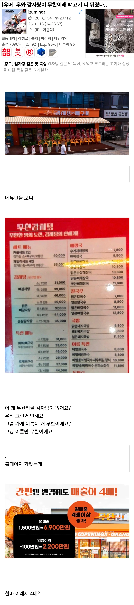

우와 감자탕이 무한이래...뼈고기 다 뒤졌다
댓글
근데 감자탕도 등뼈 큰거 1~2개 먹으면 진짜 배불러서 애초에 무한으로 먹고싶다는 생각이 안들던데
뭐야 너 마운자로 맞아?
아무리커봤자 붙어있는고기 다 모아도
100g 조금 넘을텐데 배가부르다고?
검색해보니 아직 있는 브랜드네
사장님 지갑이 무한이 된다는 뜻이었구나
걍 대놓고 손님을 기만하네
오픈빨 원툴 가게
옆 가게 이름도 심상치 않은데
무한성에서도 혈귀는 계속 나온다
가서 무한 아닌거 알았으면 일어나야지...
저건 사기잖아 ㅠㅠ
도전!
애초에 이 난장판이 나게 된 원인인 상호가 무한감자탕인데 가게 이름에 모자이크하는 의미가 있나..?
무한 아니면 걍 일어나면 되고
저따구로 장사하면 ㅈㄴ 맛집인게 아닌 이상 금방 망함
근데 맛집은 절대 아닐듯ㅋ
맛에 자신 있으면 저딴 장난쳐서 사람 끌어모을 생각안하지
요즘 뼈해장국도 맛대가리 존나 없게하는 병신 식당들 많은대
ㄹㅇ 저건 한번 다녀오면 다시 안가지
저러면 거위 배가르기잔아
잔대가리만 굴리는군
난 일어나서 나가지만,
높은 확률로 일행 중 하나는 "그냥 먹자" 라고 함.
그럼 그냥 먹겠지만,
다음부턴 다신 안감
그딴 소리하는 병신이랑은 겸상 안함 ㄹㅇ로
ㅂㅅ
그럼 그냥 처먹는다고 저걸?
ㅂㅅ
ㅂㅅ 호구새끼 ㅋㅋ
ㅂㅅ
무도가그립네
ㅂㅈㅇ 감자탕도 진출했노
감자탕 먹을때 주는 소스 안찍어 먹는 사람있냐?
난 감자탕 먹을때 무조건 고기부터 전부다 바른다음에 밥이랑 같이 먹어서 소스만찍어서 고기먹는 행위를 안함.
내친구는 고기는 소스찍어먹고 나중에 국에 밥말아먹어서 항상 친구한테 소스 내것까지 먹으라고 넘겨줌.
난 고기먹은담에 고기 없는 국밥먹는게 상상이 안가서 일단 고기 발라서 국에 넣고 밥말아서 먹지.
나랑 같소
감자탕 국물이랑 먹지 소스는 안먹음
근데 난 탕수육도 소스없이 그냥 튀김만 먹고 돈까스도 소스없이 튀김만 먹음
어렸을땐 삼겹살도 쌈장 이런거 없이 고기랑 밥만 먹었는데 중고딩즈음부터 쌈장이나 소금같은거 찍어 먹은듯
식당에선 소스 찍어 먹음.
밥하고 진한 국물만 씹는게 더 맛나더라.
그러나 집에선 너처럼 먹음
무한감자탕이라면 그냥 가게이름이구나 할거같은데
무한리필 감자탕이였으면 기만이지만
무한도전은 도전 무한리필 하는 프로그램임?ㅋㅋㅋ
이젠 안해주던데
어... 그건...


아 응암동 감자탕골목집들이 무한이었는데...그립다
이화감자국 맛있었는데 아직 있나
90년대 후반에 다녀서 몰겠네. 감자탕골목 자체는 없어진거 같은데
개좇병신같은 컨셉이다 참..
저정도면 프차 대표가 점주들 한탕 빨아먹고 엑싯하려고 만든 프차지 ㅋㅋㅋㅋ
저런구조는 테이블 앉아서 자세히 보려고하면 간식거리나 물 얹어서 일어나기 불편하게 만듦
들어가기전에 메뉴판 안보이게하는 음식점들 절대 안가지
이름 바꾼 후 첫달 매출 아님? 그다음달부터는 왔던손님 절대 안오고 점점 하락세일것 같은데 ㅋㅋ
근데 무한기대하고 간건 아니고 그냥 감자탕 먹으러 갔는데 나름 괜찮긴 했음
무한이네 감자탕으로 비꿔라!!!
2인이 40000원 4인이 55000원????
나도 우와~하고 가려다 검색해보고 욕함
순살감자탕 있는건 좋긴한데 너무 의도가 안좋네 ㅋㅋ
응 그냥나가